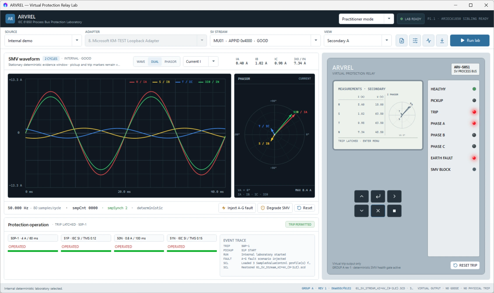

RELAY ANY PU → TESTSET BI2
BO2 is generic ANY PICKUP. Another enabled element may assert it before the element that ultimately trips.
IEC 61850 · Closed-loop relay testing · 87T/REF · AVR/OLTC · Engineering evidence
ARVREL v0.1.0-beta.6 separates the virtual test set, wiring, numerical relay front end, protection logic, relay contacts, and TESTSET binary inputs so measured timing follows the external virtual-I/O path instead of an internal trip shortcut.

Closed-loop authority
Internal relay trip may request BO1. The authoritative TESTSET trip exists only after BO1 behavior, the virtual trip wire, independent 10 kHz BI sampling, and BI1 acceptance.
Operator timing semantics
BO2 is generic ANY PICKUP. Another enabled element may assert it before the element that ultimately trips.
The operated element owns its own P→T. A 60 ms representable 50P definite delay remains exactly 60.000 ms in the reference engine.
BI1 owns the measured external trip time and optional auto-stop. Evidence keeps the contact/input path visible.
Reset and evidence
After BI1 auto-stop, ARVREL shows OUTPUT OFF · FROZEN CAPTURE. One relay RESET drains stale fault-window acquisition, clears relay state once, releases BO1/BO2 and TESTSET BI1/BI2, and reports READY TO RE-ARM only after the modeled postcondition is satisfied. Completed TESTSET timing and trip evidence remain available.
Multi-IED laboratory
4I+4V internal injection, live/replay SV, 50/51/67/27/59/59N, external virtual-I/O timing, operation records, and evidence schema 9.
10-scenario self-test, synchronized HV/LV/neutral internal injection, CT/vector compensation, security logic, and paired-SV live/replay evaluation.
Simulated transformer plant, 17-position OLTC, authority/interlocks, MMS browse/read, DataSets, reports, and modeled controls that terminate inside the simulator.
Process bus and trust
Npcap live Sampled Values plus PCAP/PCAPNG replay with SCL-assisted identity, mapping, scaling, quality, continuity, and freshness evidence.
AllowsMeasurement, AllowsPickup, and AllowsTrip expose why a stream can remain visible while new protection authority is blocked.
Settings fingerprints, source/run identity, timing events, operated-element cause, trust state, topology, frozen capture, and virtual-control outcomes are retained for review.
Bounded claims
The 1 µs clock, 10 kHz BI sampler, contact behavior, ADC model, and relay delays define a deterministic behavioral laboratory profile. ARVREL does not claim a calibrated commercial test set, a manufacturer-specific relay clone, IEC 61850 conformance, IEC 60255 type testing, commissioning acceptance, or protection-grade hard-real-time performance.
Start from your task
Exercise a feeder fault, read the timing rail, auto-stop, frozen capture, and one-click re-arm.
ScopeReview feeder, transformer, AVR/MMS, process-bus, timing, and evidence capabilities.
AuthorityFind current status, architecture, user workflows, research notes, historical milestones, and release integrity.